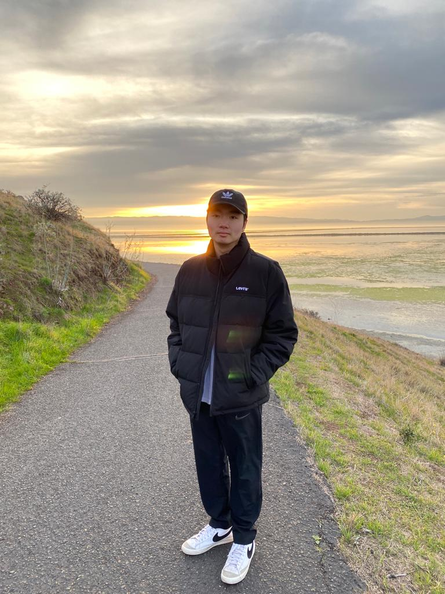
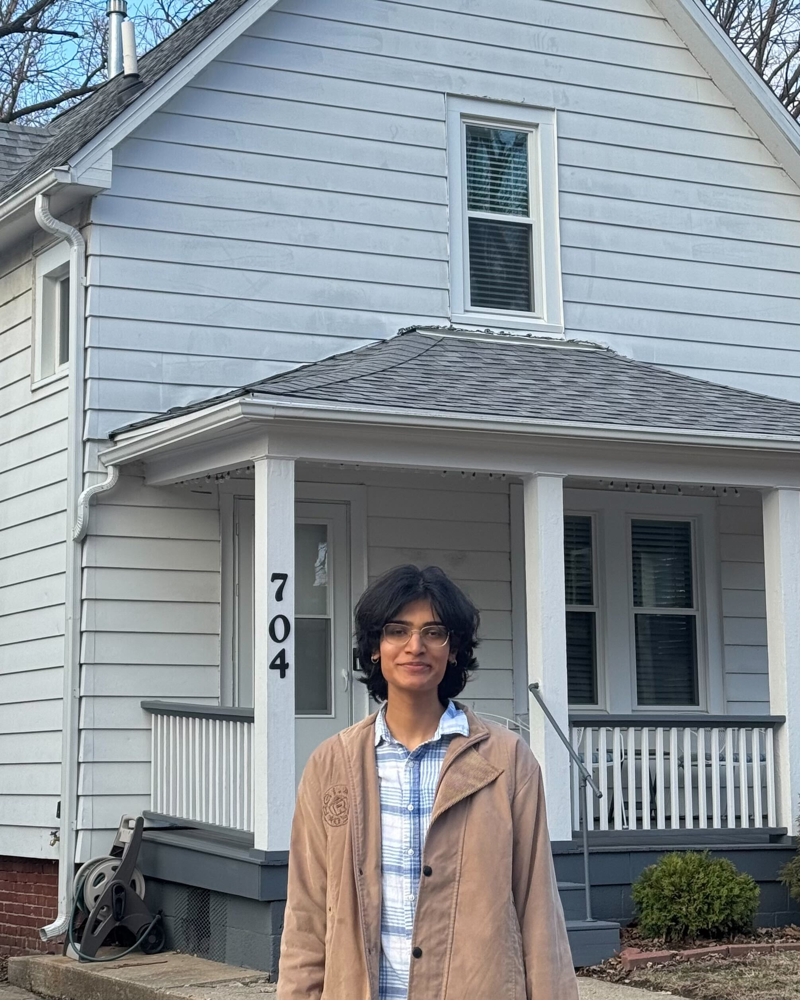
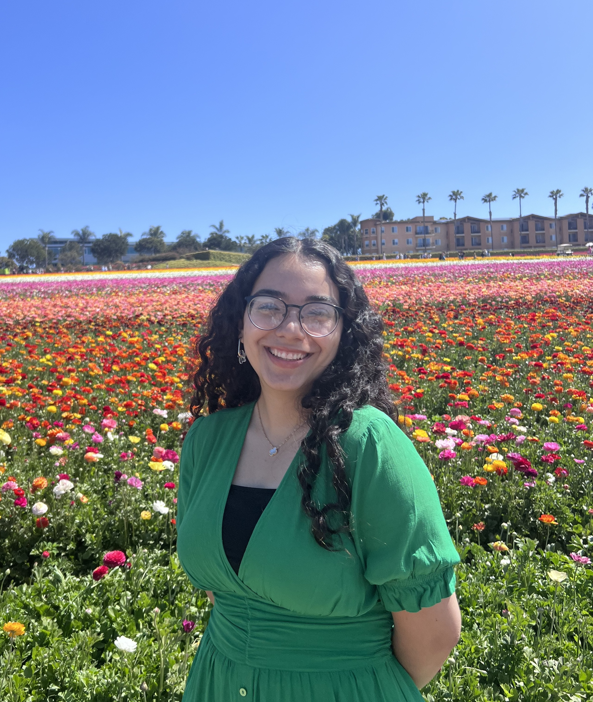

DSC 40B – Theoretical Foundations of Data Science II
Instructors

Marina Langlois
Hi, I am Marina and I am originally from Russia (not France!). I moved to Chicago to continue my education and I earned my PhD in Computer Science from UIC. Then I worked at Yeshiva University, NYC and then moved to San Diego. I was a member of CS department at first but moved to Data Science and I am loving it! I am excited to be your instructor for this quarter and you are welcome to stop by just to chat :) Fun fact: I play ping pong!💃
Staff

Walter Wong
Teaching Assistant
Hi, my name is Walter, a first-year MS student in CSE, and former DSC undergrad. I'm from the Bay Area and in my free time I enjoy playing basketball and collecting Pokemon cards. I look forward to seeing and talking to you all throughout the quarter!
Aryan Nath
Tutor
Hi, my name is Aryan, a second-year Data Science major. I grew up in California and India and love playing basketball, reading, and going on drives. This is my first time tutoring for DSC 40B but I'm super excited to help out in any way I can. Feel free to reach out if you have any questions or just want to chat!
Audrey Meredith
Tutor
Hi! Here's my bio: Hi, my name is Audrey and I'm a third-year DSC major. I'm from Chicago and in my free time I love going on runs, going to the beach, trying to surf, and hanging out with friends. A fun fact about me is that I was a competitive figure skater for 15 years! I'm excited to meet you all so feel free to reach out!
Jacob Doan
Tutor
Hi, I'm Jacob. I'm a third-year data science major and San Diego local. In my free time, I like gaming, teaching, and getting a good workout—lifting, running, bowling, and kendo. I'm looking forward to working with everyone this quarter!

Kalkin
Tutor
I am Kalkin and I'm a fourth year undergrad in Computer Engineering and Math💻🔢. This is my first time tutoring for DSC 40B and I'm excited to meet everyone this quarter! Other courses I've tutored include DSC 30, CSE 140, ECE 45, and ECE 109. I'm from the Bay Area and my interests include math, indie rock, and board games. Always feel free to stop by my office hours and just chat :)
Nathan Dang
Tutor
Hi, I'm Nathan, third year Data Science major from Sixth. My favorite activity is actually listening to music, I almost always have my airpods on. I also love cars, and enjoy going to car meets. I'm excited to tutor for DSC 40B, and I look forward to meeting and working with everyone this quarter.

Norah Kerendian
Tutor
Hi! I'm Norah, a fourth-year Data Science major with minors in Math and Economics. This is my fourth time tutoring 40B and my eighth time tutoring overall. I'm originally from Los Angeles and will be moving to Austin this fall (housing, food, and other recommendations welcome!). Outside of class, I love chatting about books (always on the hunt for my next read), internships, or anything you're passionate about. Please don't hesitate to reach out!